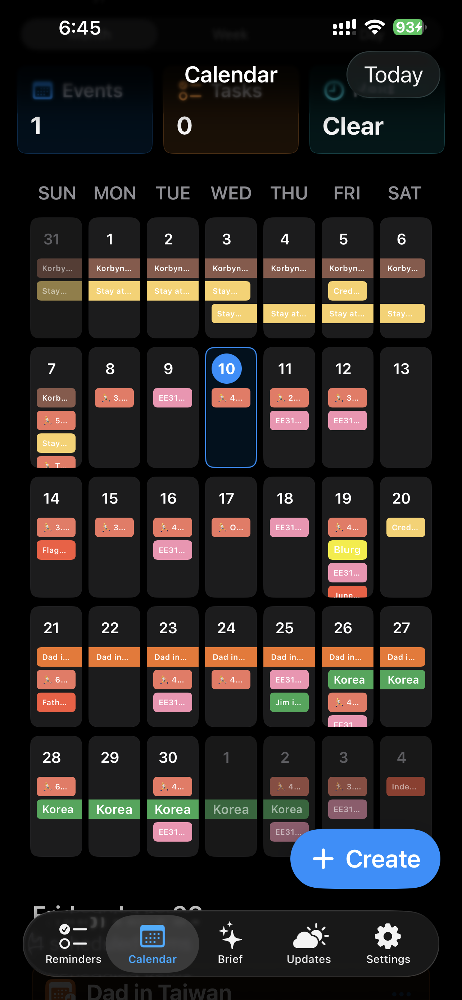
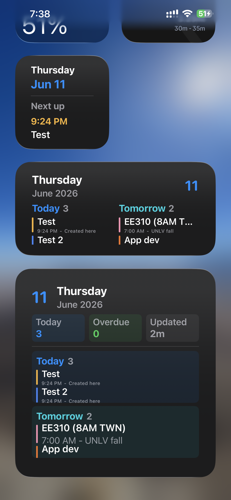
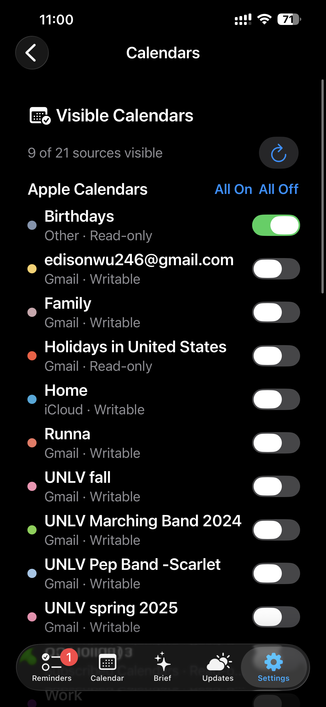
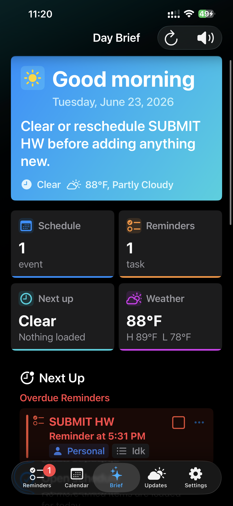
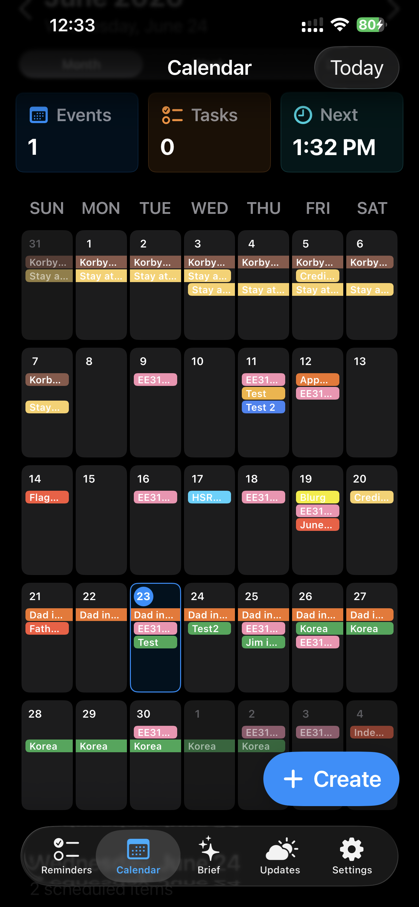
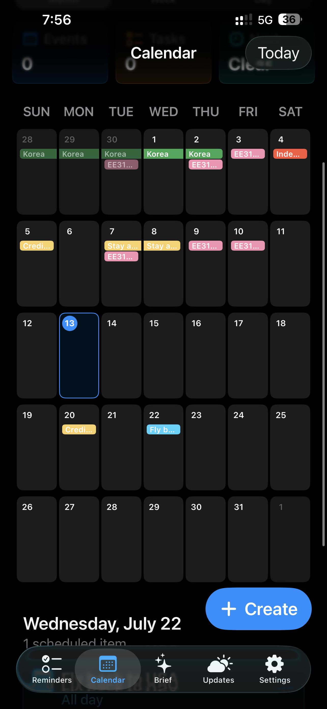
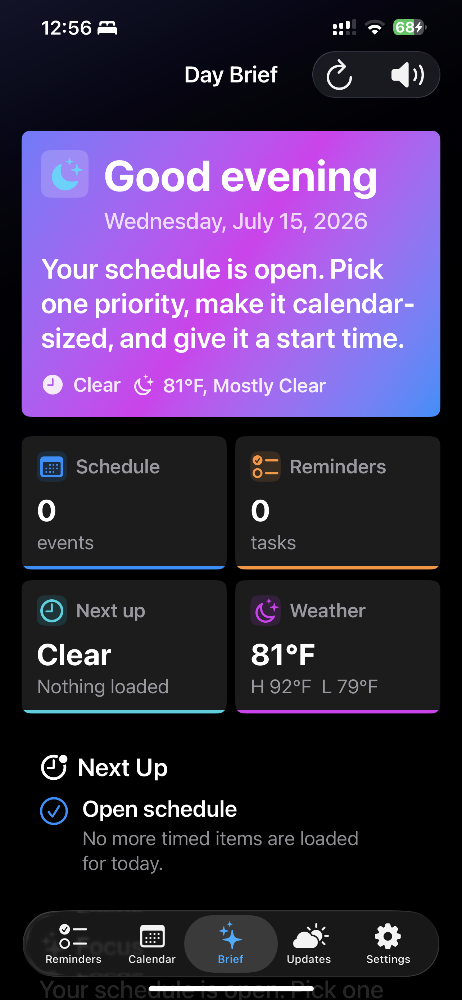
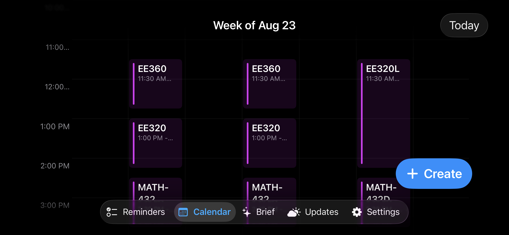
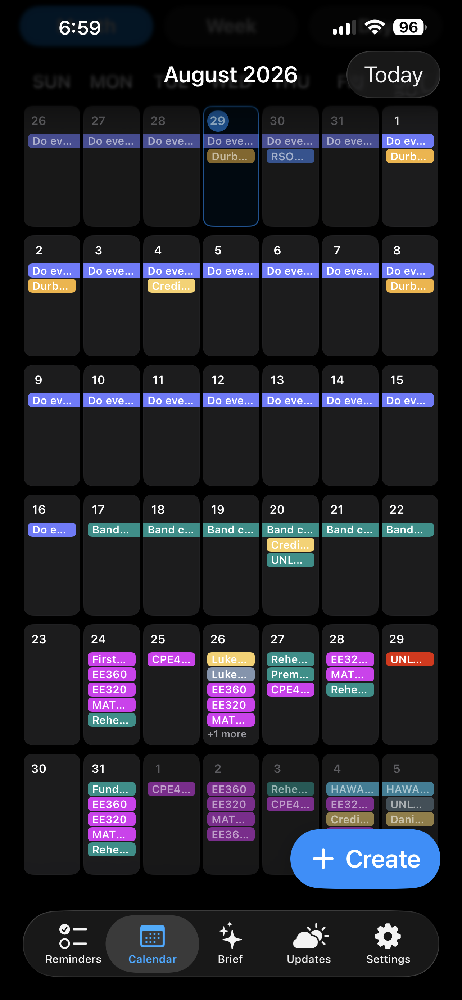
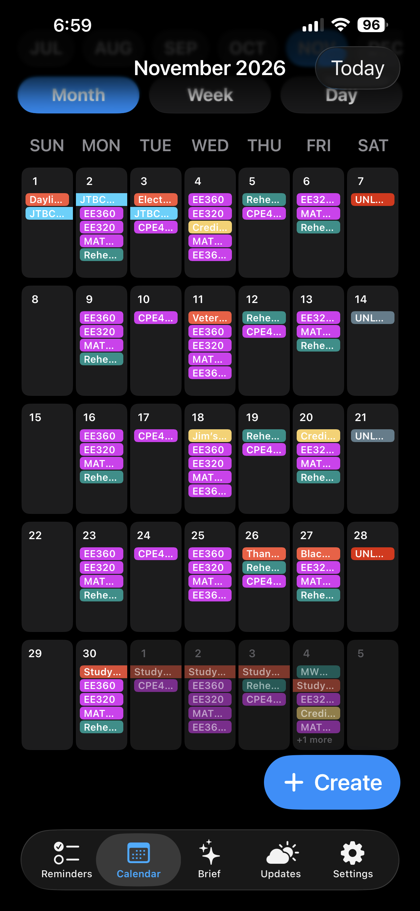

Eddie Calendar
Eddie Calendar is an iOS calendar app I built to better manage events, routines, categories, and schedules. It eventually became my daily-driver calendar app.
Goal
Build a calendar app that makes it easier to manage time, routines, events, and recurring schedules while giving me more control over calendar organization and presentation.
Major Milestones
- June 11, 2026 — Implemented the calendar category system, external calendar integration framework, recurring event framework, and theme support.
- June 15, 2026 — Eddie Calendar became my daily-driver calendar app.
- July 29, 2026 — Fixed recurring events and successfully entered my Fall 2026 semester schedule into Eddie Calendar.
Current Features
- Local, Google, and Apple calendar support
- Custom event categories
- User-configurable category colors
- Calendar visibility controls
- Month, week, and day views
- Horizontal hourly week view
- Recurring events
- Dark, light, and system themes
- Calendar widgets
Development Progress
The project has gone through several rounds of feature development, debugging, interface redesign, and code cleanup.
June 2026
Early development focused on fixing event creation bugs, improving month-view behavior, adding themes, implementing calendar selection, introducing event categories, and building the initial recurring event system.
Widget Development
I also worked on calendar widgets, including the Next Up widget, larger layouts, readability, information prioritization, and widget presentation logic.
July 2026
I went back through the app to remove unused code and inefficiencies, refined the month, week, and day interfaces, reduced unnecessary scrolling, fixed recurring events, and began working on offline access.
Development Screenshots
June 10, 2026
Development Screenshots
June 10, 2026


June 16, 2026

June 23, 2026


July 13, 2026

July 15, 2026

July 29, 2026



Development Log
- June 9 — Fixed event creation and phantom date highlighting.
- June 10 — Added themes, hourly week view, calendar selection, visibility toggles, categories, custom colors, and repeating-event support.
- June 11 — Continued widget development.
- July 28 — Code cleanup and calendar UI refinement.
- July 29 — Finished UI revisions, fixed recurring events, and started offline-access work.
What I Learned
Building Eddie Calendar gave me experience with iterative UI design, recurring-event logic, calendar integration, refactoring, debugging, and maintaining an application that I actually use every day.
Future Work
- Improve offline access
- Continue refining the user interface
- Expand calendar and scheduling features
- Add shared calendars
- Explore location-aware scheduling and commute context